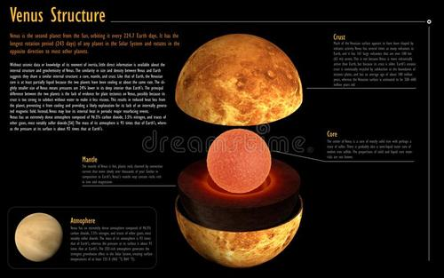
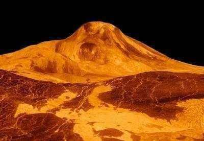
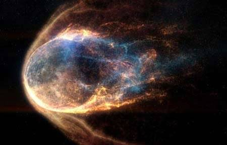
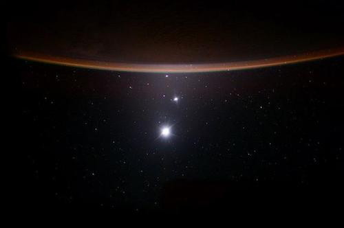
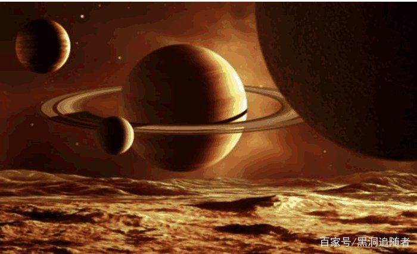
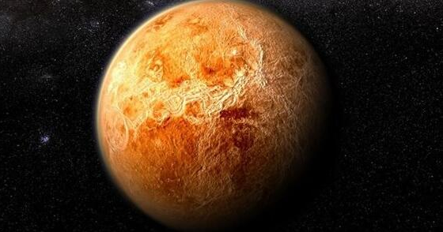
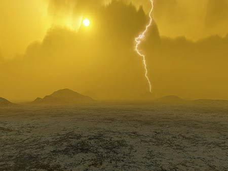
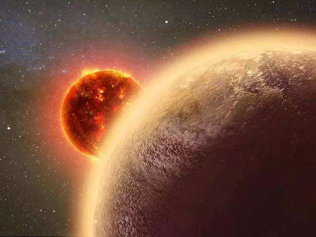
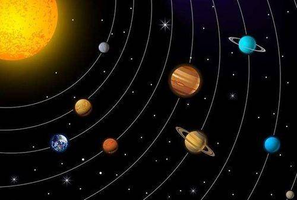
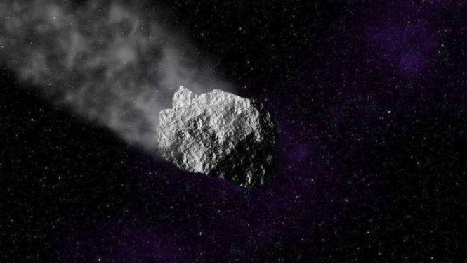

金星相关知识
金星，太阳系中八大行星之一。按离太阳由近及远的次序，是第二颗，距离太阳0.725天文单位。公转周期是224.71地球日。
金星，它是离地球最近的行星（有时候火星会更近）。它清晨称为“启明”出现在东方天空；傍晚称为“长庚”处于天空的西侧。在日出稍前或日落稍后达到亮度最大，其亮度在夜空中仅次于月球，排第二。
2018年9月2日，天宇上演行星金星“合”恒星角宿一的美丽天象，这两颗亮星将近距离接触，为公众上演一幕浪漫的“星星相吸”
星体特性
金星是一颗类地行星，因为其质量与地球类似，有时也被人们叫做地球的“姐妹星”。也是太阳系中唯一一颗没有磁场的行星。在八大行星中金星的轨道最接近圆形，偏心率最小，仅为0.006811。
以地球为三角形的顶点之一，分别连结金星和太阳，就会发现这个角度非常小，即使在最大时也只有48.5°，这是因为金星的轨道处于地球轨道的内侧。因此，当我们看到金星的时候，不是在清晨便是在傍晚，并且分别处于天空的东侧和西侧。
中国古人称金星为“太白”或“太白金星”，也称“启明”或“长庚”（傍晚出现时称“长庚”，清晨出现时称“启明”）古希腊人称为阿佛洛狄忒，是希腊神话中爱与美的女神。而在罗马神话中爱与美的女神是维纳斯，因此金星也称作维纳斯（Venus）。维纳斯是爱与美的女性之神，所以金星的天文符号就是女性的标志：♀，也有人形象地将这个符号比喻为“维纳斯的梳妆镜”。
地形地貌
在金星表面的大平原上有两个主要的大陆状高地。北边的高地叫伊师塔地（Ishtar Terra），拥有金星最高的麦克斯韦山脉（大约比喜马拉雅山高出两千米），它是根据詹姆斯·克拉克·麦克斯韦命名的。麦克斯韦山脉（Maxwell Montes）包围了拉克西米高原（Lakshmi Planum）。伊师塔地大约有澳大利亚那么大。南半球有更大的阿芙罗狄蒂地（Aphrodite Terra），面积与南美洲相当。这些高地之间有许多广阔的低地，包括有爱塔兰塔平原低地（Atalanta Planitia）、格纳维尔平原低地（Guinevere Planitia）以及拉卫尼亚平原低地（Lavinia Planitia）。除麦克斯韦山脉外，所有的金星地貌均以现实中或神话中女性命名。由于金星浓厚的大气让流星等天体在到达金星表面之前减速，所以金星上的陨石坑都不超过3.2千米。
大约90%的金星表面是由不久之前才固化的玄武岩熔岩形成，当然也有极少量的陨石坑，金星的内部可能与地球是相似的：半径约3000千米的地核和由熔岩构成的地幔组成了金星的绝大部分。来自麦哲伦（Magellan）号的最近的数据表明金星的地壳比起原来所认为的更厚也更坚固。可以据此推测金星没有像地球那样的可移动的板块构造，但是却有大量的有规律的火山喷发遍布金星表面。金星上最古老的特征仅有8亿年历史，大多数地区都很年轻（但也有数亿年的时间）。那时广泛存在的山火擦洗了早期的表面，包括几个金星早期形成的大的环形山口金星的火山在隔离的地质热点依旧活跃。
金星本身的磁场与太阳系的其它行星相比是非常弱的。这可能是因为金星的自转不够快，其地核的液态铁因切割磁感线而产生的磁场较弱造成的。这样一来，太阳风就可以毫无缓冲地撞击金星上层大气。最早的时候，人们认为金星和地球的水在量上相当，然而，太阳风攻击已经让金星上层大气水蒸气分解为氢和氧。氢原子因为质量小逃逸到了太空。金星上氘（氢的一种同位素，质量较大，逃逸得较慢）的比例似乎支持这种理论。而氧元素则与地壳中物质化合，因而在大气中没有氧气。金星表面十分干旱，所以金星上岩石要比地球上的更坚硬，从而形成了更陡峭的山脉、悬崖峭壁和其它地貌。一条从南向北穿过赤道的长达1200千米的大峡谷，是八大行星中最大的峡谷。
金星上没有小的环形山，看起来小行星在进入金星的稠密大气层时没被烧光了。金星上的环形山都是一串串的看来是由于大的小行星在到达金星表面前，通常会在大气中碎裂开来
玛亚特山，金星上最大的火山之一，比周围地区高出9000米，宽200千米，火山及火山活动金星表面为数很多。至少85%的金星表面覆盖着火山岩除了几百个大型火山外，在金星表面还零星分布着100000多座小型火山从火山中喷出的熔岩流产生了了长长的沟渠，范围大至几百公里，其中最长的一条超过7000公里
星体结构
关于金星的内部结构，还没有直接的资料，从理论推算得出，金星的内部结构和地球相似，有一个半径约3100公里的铁-镍核，中间一层是主要由硅、氧、铁、镁等的化合物组成的“幔”，而外面一层是主要由硅化合物组成的很薄的“壳”。
科学家推测金星的内部构造可能和地球相似，依地球的构造推测，金星地函主要成分以橄榄石及辉石为主的矽酸盐，以及一层矽酸盐为主的地壳，中心则是由铁镍合金所组成的核心。金星的平均密度为5.24g/cm3，次于地球与水星，为八大行星（冥王星已于2006年划归为矮行星，故称八大行星）中第三位的
一个直径3000千米的铁质内核，熔化的石头为地幔填充大部分的星球。厚得多。就像地球，在地幔中的对流使得对表面产生了压力，但它由相对较小的许多区域减轻负荷，使得它不会像在地球，地壳在板块分界处被破坏。
火山分布
金星上可谓火山密布，是太阳系中拥有火山数量最多的行星。已发现的大型火山和火山特征有1600多处。此外还有无数的小火山，没有人计算过它们的数量，估计总数超过10万，甚至100万。
金星火山造型各异。除了较普遍的盾状火山，这里还有很多复杂的火山特征，和特殊的火山构造。目前为止科学家在此尚未发现活火山，但是由于研究数据有限，因此，尽管大部分金星火山早已熄灭，仍不排除小部分依然活跃的可能性。
金星与地球有许多共同处。它们大小、体积接近。金星也是太阳系中离地球最近的行星，也被云层和厚厚的大气层所包围。同地球一样，金星的地表年龄也非常年轻，约5亿年左
不过这些基本的类似中，也存在很多不同点。金星的大气成分多为二氧化碳，因此它的地表具有强烈的温室效应其大气压大约是地球的90倍，这差不多相当于地球海面下一公里处的水压。
金星地表没有水，空气中也没有水分存在，其云层的主要成分是硫酸，而且较地球云层的高度高得多。由于大气高压，金星上的风速也相应缓慢。这就是说，金星地表既不会受到风的影响也没有雨水的冲刷。因此，金星的火山特征能够清晰地保持很长一段时间
迹象表明，金星火山的喷发形式也较为单一。凝固熔岩层显示，大部分金星火山喷发时，只是流出的熔岩流没有剧烈爆发、喷射火山灰的迹象，甚至熔岩也不似地球熔岩那般泥泞粘质。这种现象不难理解。由于大气高压爆炸性的火山喷发，熔岩中需要有巨大量的气体成分。在地球上，促使熔岩剧烈喷发的主要气体是水气，而金星上缺乏水分子。另外，地球上绝大部分粘质熔岩流和火山灰喷发都发生在板块消亡地带。因此，缺乏板块消亡带也大大减少了金星火山猛烈爆发的几率
大气环境
金星的天空是橙黄色的。金星上也有雷电，曾经记录到的最大一次闪电持续了15分钟。
金星的大气主要由二氧化碳组成，并含有少量的氮气。金星的大气压强非常大，为地球的92倍，相当于地球海洋中1千米深度时的压强。大量二氧化碳的存在使得温室效应在金星上大规模地进行着。如果没有这样的温室效应温度会下降400℃。在近赤道的低地，金星的表面极限温度可高达500℃。这使得金星的表面温度甚至高于水星虽然它离太阳的距离要比水星大的两倍，并且得到的阳光只有水星的四分之一（高空的光照强度为2613.9W/m2，表面为1071.1W/m2）。尽管金星的自转很慢（金星的“一天”比金星的“一年”还要长，赤道地带的旋转速度只有每小时6.5千米），但是由于热惯性和浓密大气的对流，昼夜温差并不大。大气上层的风只要4天就能绕金星一周来均匀的传递热量。
金星浓厚的云层把大部分阳光都反射回了太空，所以金星表面接受到的太阳光比较少，大部分阳光都不能直接到达金星表面。金星热辐射反射率大约是60%，可见光反射率就更大。虽然金星比地球离太阳的距离要近，它表面所得光照却比地球少。如果没有温室效应作用，金星表面温度就会和地球很接近。人们常常会想当然的认为金星的浓密云层能够吸收更多的热量，事实证明这是非常荒谬的。与此正相反，如果没有这些云层，温度会更高。大气中二氧化碳的大量存在所造成的温室效应才是吸收更多热量的真正原因。
2004年金星凌日在云层顶端金星有着每小时350千米的大风，而在表面却是风平浪静，每小时不会超过数千米然而，考虑到大气的浓密程度，就算是非常缓慢的风也会具有巨大的力量来克服前进的阻力。金星的云层主要是由二氧化硫和硫酸组成，完全覆盖整个金星表面。这让地球上的观测者难以透过这层屏障来观测金星表面。这些云层顶端的温度大约为-45℃。美国航空及太空总署给出的数据表明，金星表面的温度是464℃。云层顶端的温度是金星上最低的，而表面温度却从不低于400℃。
金星表面的温度很高，是因为金星上强烈的温室效应，温室效应是指透射阳光的密闭空间由于与外界缺乏热交换而形成的保温效应。金星上的温室效应强得令人瞠目结舌，原因在于金星的大气密度是地球大气的100倍，且大气97%以上是“保温气体”——二氧化碳；同时，金星大气中还有一层厚达20～30千米的由浓硫酸组成的浓云。二氧化碳和浓云只许太阳光通过，却不让热量透过云层散发到宇宙空间。被封闭起来的太阳辐射使金星表面变得越来越热。温室效应使金星表面温度高达465至485℃，且基本上没有地区、季节、昼夜的差别。它还造成金星上的气压很高，约为地球的90倍。浓厚的金星云层使金星上的白昼朦胧不清，这里没有我们熟悉的蓝天、白云，天空是橙黄色的。云层顶端有强风，大约每小时350千米，但表面风速却很慢，每小时几千米不到。十分有趣的是，金星上空会像地球上空一样，出现闪电和雷暴。
星体卫星
人们曾经认为金星有一个卫星，名叫尼斯，以埃及女神塞斯（没有凡人看过她面纱下的脸）命名。它的首次发现是由意大利出生的法国天文学家乔凡尼·多美尼科·卡西尼在1672年完成的。天文学家对尼斯的零星观察一直持续到1982年，但是这些观察之后受到了怀疑（实际上是其它昏暗的星体在巧合的时间出现在了恰好的位置上）所以认为金星没有卫星。
观测历史
在太空探测器探测金星以前，有的天文学家认为金星的化学和物理状况和地球类似，在金星上发现生命的可能性比火星还大。20世纪50年代后期，天文学家用射电望远镜第一次观测了金星的表面。从1961年起，苏联和美国向金星发射了30多个探测器，从近距离观测，到着陆探测。
金星的轨道比水星的要大。当进行处于西方（在太阳之右）或东方（在太阳之左）的最大距角时，看起来它距太阳比水星距太阳远一倍。金星是天空中最亮的天体之一，观察它的最佳时间可能是当太阳恰好位于地平线以下的时候。必须注意，千万不能用眼睛直接看太阳。太阳落山金星随后落下，此时它位于太阳之左；太阳升起前金星首先升起，此时它位于太阳之右。
你很容易分辨出金星来，它明亮而略呈黄色。当金星呈大“新月”形时，用双筒望远镜观测它是最合适的。此时金星位于最大距角点与下合点之间在下合点时金星位于地球与太阳之间，我们便看不到它了，注意调好望远镜的焦距使之能观察遥远的物体。
前苏联和美国
前苏联于1961年1月24日发射“巨人”号金星探测器，在空间启动时因运载火箭故障而坠毁。1961年2月12日试验发射“金星1号”，这个成功飞往金星的探测器重643千克，在1965年11月12日和5日发射的“金星2号”和“金星3号”均告失败，“金星3号”重达963千克，当它在金星上硬着陆后，一切通信遥测信号全部中断，估计是仪器设备摔毁了。尽管如此，前苏联科学家认为还是有收获的，因为取得可直接“命中”金星的首战告捷。
1967年1月12日，成功发射了“金星4号”探测器，同年10月抵达金星，向金星释放了一个登陆舱，在它穿过大气层的94分钟时间里，测量了大气温度、压力和化学组成。1969年发射了“金星5号”和“金星6号”，再次闯入金星大气探测，探测器最后降落在金星表面上，由于硬着陆仪器设备损坏，因此不能探测金星表面情况。1970年8月17日“金星7号”探测器成功发射，它穿过金星浓云密雾，冒着高温炽热，首次实现金星表面的软着陆。“金星7号”测得金星表面大气压力强至少为地球的90倍，温度高达470℃。
1978年9月9日和9月14日，前苏联又发射了“金星11号和12号”，两者均在金星成功实现软着陆，分别工作了110分钟。特别是“金星12号”在12月21日向金星下降的过程中，探测到金星上空闪电频繁、雷声隆隆，仅在距离金星表面11千米下降到5千米的这段时间就记录到1000次闪电，有一次闪电竟然持续了15分钟！
相关文化
历法
金星历法是一种以金星的周期活动为标准的历法规则。然而，金星历法并不是什么科幻小说的作品，而是切切实实曾在古代玛雅文明出现过的历法系统。基于一种我们不知道的原因，玛雅人同时采用两套历法系统，而其中一套历法系统就是基于金星的周期运转而制成。
维纳斯
Venus是爱神、美神，同时又是执掌生育与航海的女神，这是她在罗马神话中的名字；在希腊神话里，她的名字是阿弗洛狄德。Venus是从海里升起来的。据说世界之初，统管大地的该亚女神与统管天堂的乌拉诺斯结合生下了一批巨人。后来夫妻反目，该亚盛怒之下命小儿子克洛诺斯用镰刀割伤其父。乌拉诺斯身上的肉落入大海，激起泡沫，Venus就这样诞生了。希腊语中“阿佛洛狄忒”的意思就是泡沫
在希腊与罗马神话中，金星是爱与美的化身——维纳斯女神。维纳斯（Venus）是罗马人对她的美称，意思是“绝美的画”，在希腊神话中她叫阿佛洛狄忒（Aphrodite），意思是为“上升的泡沫”，因为传说她是在海面上起的泡沫之中诞生的。维纳斯拥有罗马神话中最完美的身段和容貌，一直被认为是女性体格美的最高象征。她的美貌，使得众女神羡慕不已，也让无数天神为之着迷，甚至连她的父亲宙斯也曾追求过她。但宙斯的求爱遭到拒绝后，十分气恼，便把她嫁给了瘸腿的匠神伏尔甘（希腊神话称为赫菲斯塔司）。不过维纳斯后来却爱上了战神马尔斯，并为他生下了几个儿女，其中包括小爱神丘比特。
维纳斯的一生都在追求爱情，然而爱情的热力却总是短暂的，她对于爱情并不专一。在她无数的罗曼史中，最为凄美感人的当数她和阿多尼斯（Adonis）之间的故事了。阿多尼斯是一个俊美勇敢的年轻猎人，某日，维纳斯邂逅了正在打猎的阿多尼斯，并很快坠入爱河。她担心狩猎太危险，便劝阿多尼斯不要捕猎凶猛的大型野兽，然而阿多尼斯却对此不以为然，维纳斯一赌气就离他而去，飞向神邸。不久，不幸的事发生了，阿多尼斯打猎时被一只凶性大发的野猪撞死。维纳斯在半空中听到爱人的呻吟，赶紧飞回地面，却只见到他浑身浴血的尸体。维纳斯伤痛欲绝，她把神酒洒到阿多尼斯的身体上，血和酒相互交融，冒出阵阵气泡，然后像雨点一样落在地面上。不久地上长出一种颜色如血的鲜花，凄美迷人，但是它的生命却十分短暂，据说风把它吹开后，立即又把它的花瓣吹落。这就是秋牡丹，也叫“风之花”，成为这段动人爱情故事的美丽花祭
世界纪录
世界上肉眼看到最亮的行星：从地球上看，通常肉眼可见的五颗行星（木星、火星、水星、土星和金星）中最亮的是金星，最大星等为-4.4。（吉尼斯世界纪录）